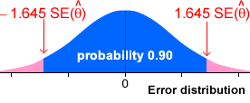
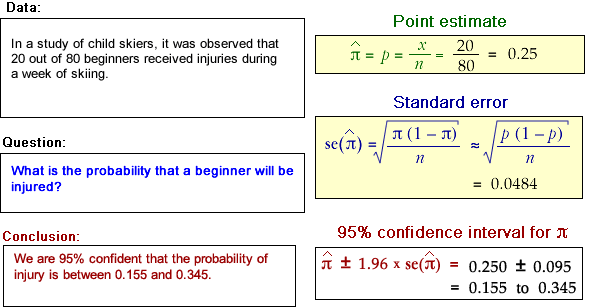

95% bounds on the error
We can use the error distribution to find a range of values within which the error will lie with probability 0.95,
Assuming that the error distribution is normal (or approximately so), we can use the fact that 95% of any normal distribution is between 1.96 standard deviations of the mean.
95% confidence interval
We can therefore write
\[ P\left(-1.96 \times \se(\hat {\theta}) \;\;\lt\;\; error \;\;\lt\;\; 1.96 \times \se(\hat {\theta})\right) \;\;\approx\;\; 0.95 \]Since this is the probability of \(\hat{\theta}\) being within \(-1.96 \times \se(\hat {\theta})\) of \(\theta\), we can also write
\[ P\left(\hat{\theta}-1.96 \times \se(\hat {\theta}) \;\;\lt\;\; \theta \;\;\lt\;\; \hat{\theta}+1.96 \times \se(\hat {\theta})\right) \;\;\approx\;\; 0.95 \]We therefore call the interval
\[ \hat{\theta}-1.96 \times \se(\hat {\theta}) \quad \text{ to } \quad \hat{\theta}+1.96 \times \se(\hat {\theta}) \]a 95% confidence interval for \(\theta\) and we have 95% confidence that it will include the actual value of the parameter.
Other confidence levels
A similar argument can be repeated to get intervals with different confidence levels. For example, 90% of values from a normal distribution are within 1.645 standard deviations of the distribution's mean, so

This leads to a 90% confidence interval,
\[ \hat{\theta}-1.645 \times \se(\hat {\theta}) \quad \text{ to } \quad \hat{\theta}+1.645 \times \se(\hat {\theta}) \]We say that we are 90% confident that an interval that is calculated in this way will include the true parameter value, \(\theta\).
Binomial examples
Each of the following data sets can be assumed to be based on a series of independent Bernoulli trials with probability \(\pi\) of success, so the number of successes has a binomial distribution.

In each example, a 95% confidence interval is calculated as the sample proportion ± 1.96 standard errors.